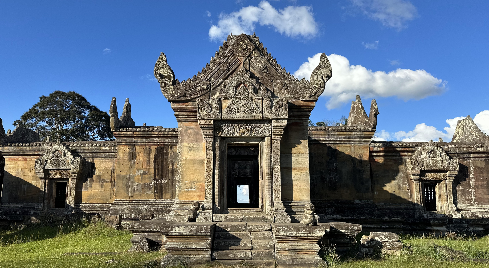
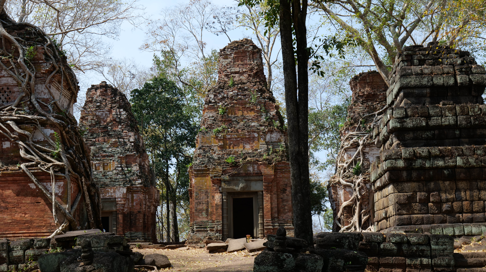


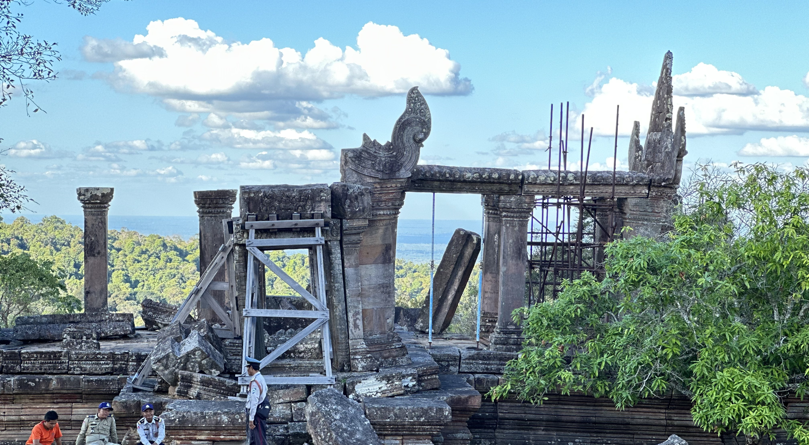
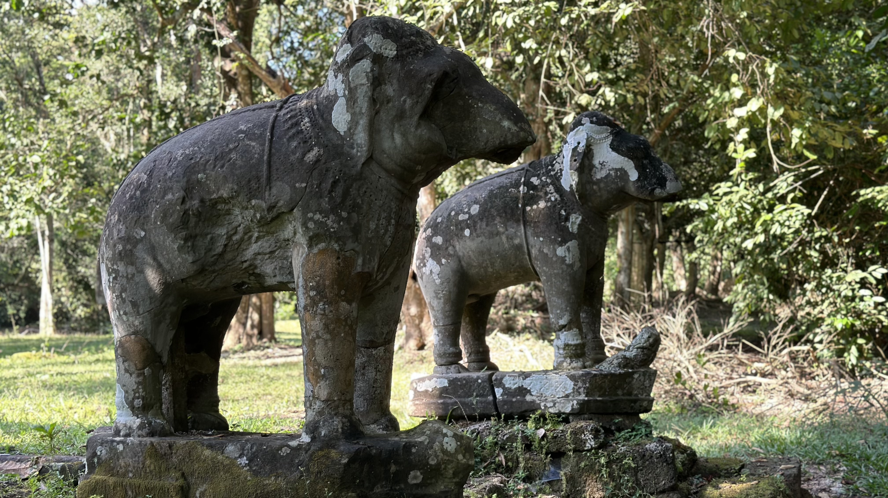
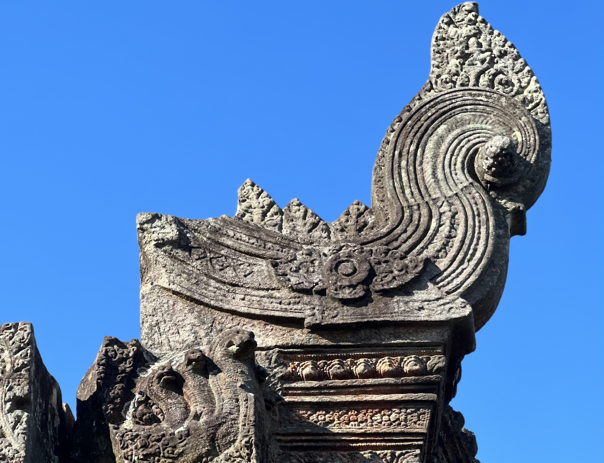
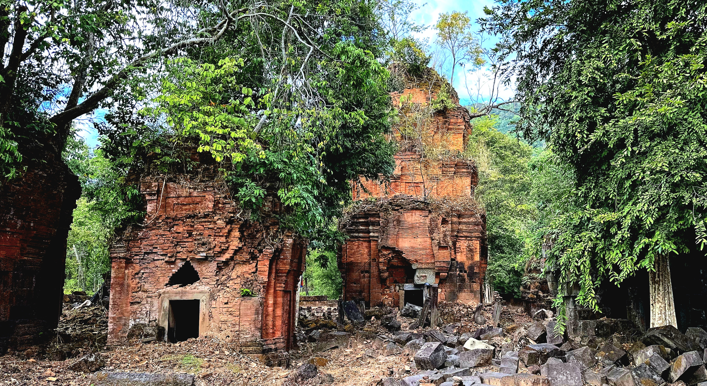
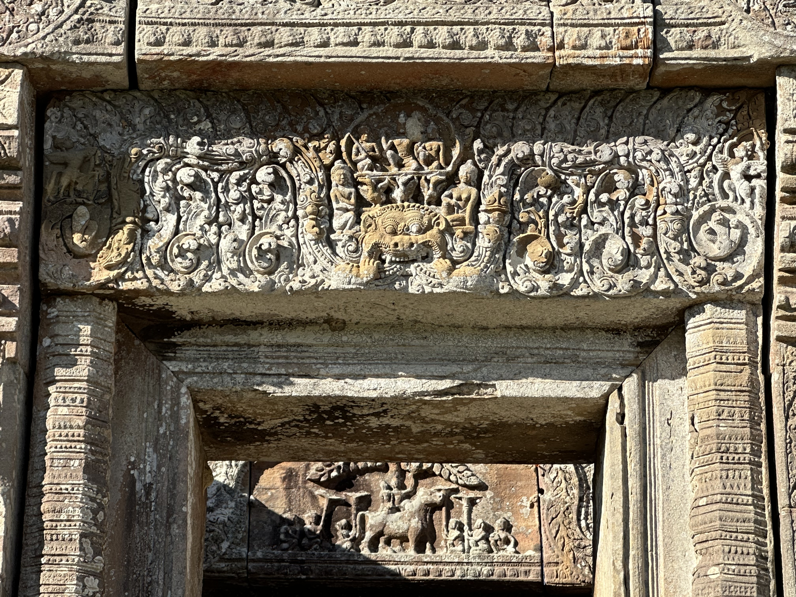
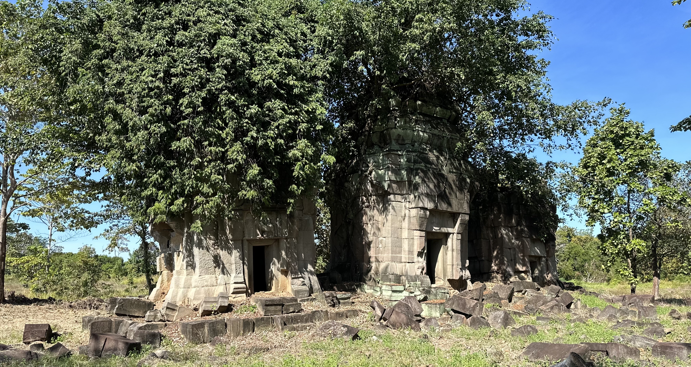
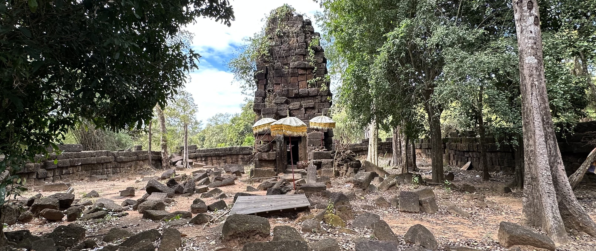
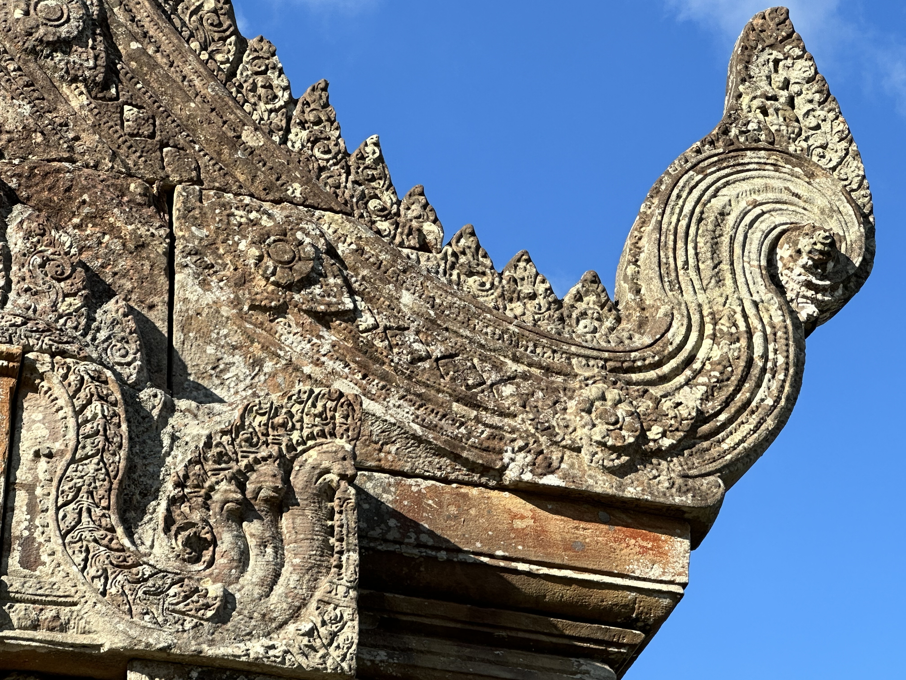
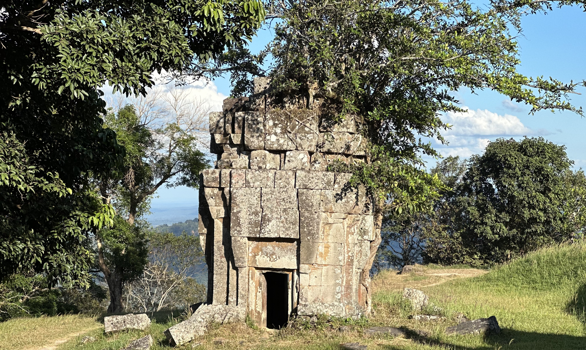
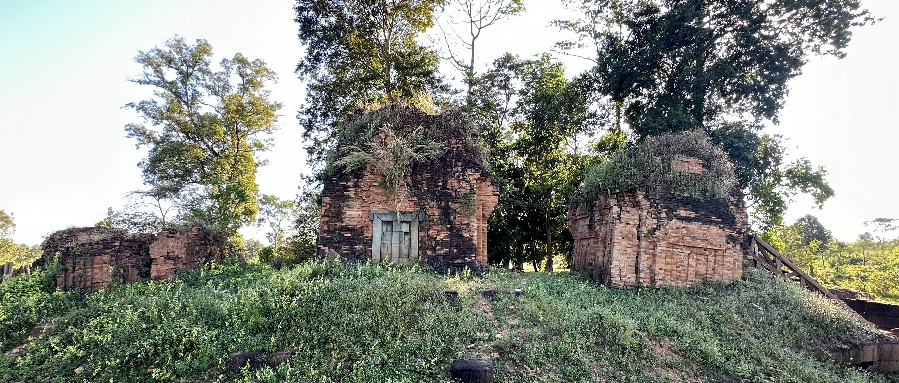
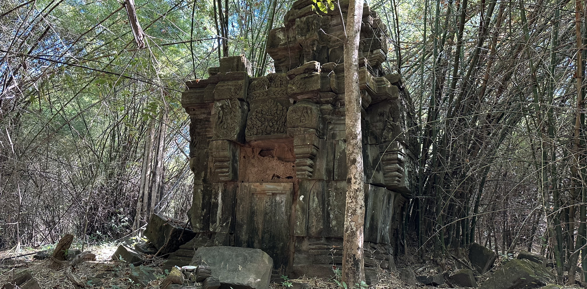
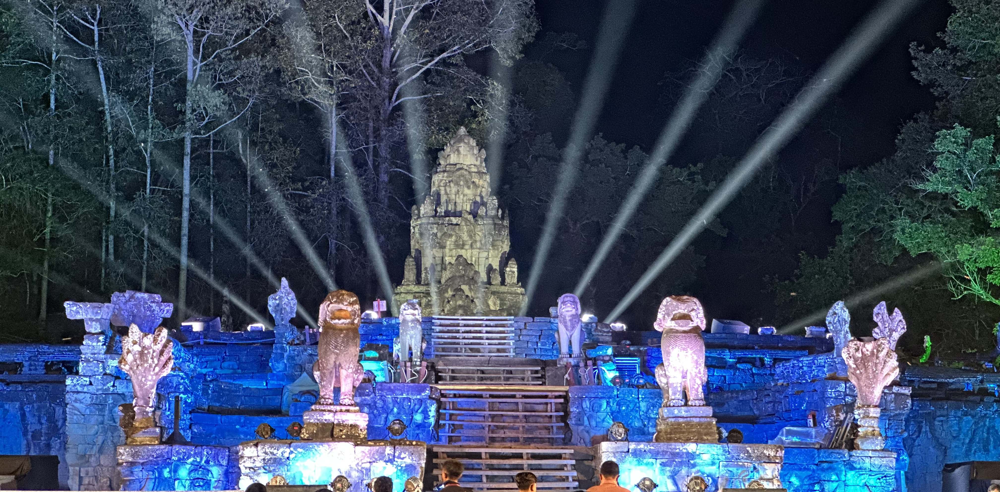
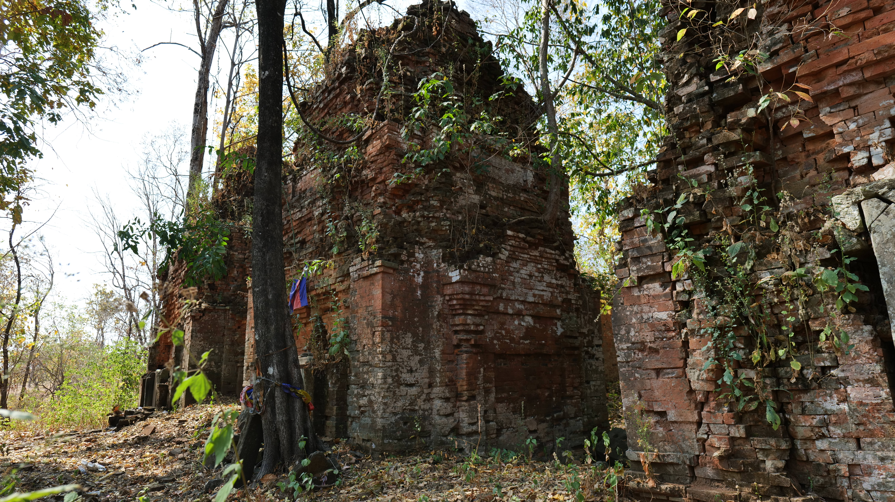

Search Temples, Attractions & Angkor Heritage
1. Prasat Pram ប្រាសាទប្រាំ (ព្រំប្រទល់ខេត្តសៀមរាប-ព្រះវិហារ)
ទីតាំង និងប្រវត្តិ៖ ប្រាសាទប្រាំ គឺជាស្ថាបត្យកម្មបុរាណដ៏មានតម្លៃក្នុងតំបន់កោះកេរ សាងសង់ឡើងនៅសតវត្សរ៍ទី១០។
2. Prasat Pram (Koh Ker) ប្រាសាទប្រាំ (តំបន់កោះកេរ)
ទីតាំង និងប្រវត្តិ៖ ស្ថិតក្នុងតំបន់បេតិកភណ្ឌពិភពលោក UNESCO កោះកេរ សាងសង់ក្នុងសតវត្សរ៍ទី១០។
3. Preah Khan Kampong Svay ប្រាសាទព្រះខ័នកំពង់ស្វាយ
សារៈសំខាន់យោធា៖ ជាក្រុង និងជាមជ្ឈមណ្ឌលយោធាដ៏សំខាន់ក្នុងសម័យអង្គរ។
4. Pong Toek Temple ប្រាសាទពងទឹក
ភាពលាក់ខ្លួន៖ ប្រាសាទបុរាណលាក់ខ្លួនក្នុងព្រៃធម្មជាតិ តំបន់ព្រះវិហារ។
Preah Khan – Maps, Highlights, Hidden Quirks, and History
West Mebon Temple – Ancient Waters & Architecture
Angkor Wat – Visiting Guide, Facts, History and More